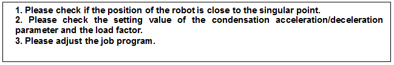
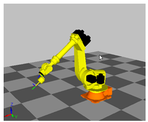
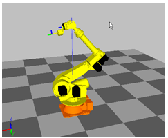
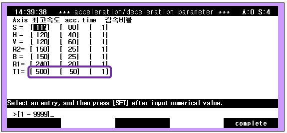

1.1.26.1. Outline
The speed of the robot’s axis exceeded the maximum speed limit while in operation. An error will be generated, and the robot will be immobilized because the robot is not being controlled normally.
When the main board sends a command to the Servo board, it will send a limited command so that the robot will not exceed the maximum speed limit. The maximum speed exceeded error may occur if the robot’s speed triggers an overshoot because the robot could not follow the command.
1.1.26.2. Causes and checking methods

1. Check if the position of the robot is close to the singular point.
This error may occur if you execute L or C interpolation instead of the PtP interpolation near the position of the singular point.
A singular point occurs when the B axis is close to 0° or the center of the wrist part is close to the spin central axis of the S axis. When passing near the singular point is required, please change the corresponding step to PtP interpolation.
 
Figure 5.66 Axis B singular point Figure 5.67 Axis S singular point
2. Check the setting value of the condensation acceleration/deceleration parameter and the load factor.
The motor torque is insufficient because the maximum speed of condensation acceleration/deceleration parameter is too high, or the acceleration time is too short. The l/lp maximum speed had to be reduced with an observation of the load factor (during the robot’s operation) or had to increase the acceleration time.
(1) System
(2) 3. Robot parameter
(3) 6. Acceleration/deceleration parameter
The acceleration/deceleration parameter of condensation can be modified from the above.

3. Adjust the job program.
Please make changes of the conditions (from the job program) on a corresponding step, or the previous step. First, try “Acc=0”; second, reduce the step speed; and third, add one more step on a movement routine.